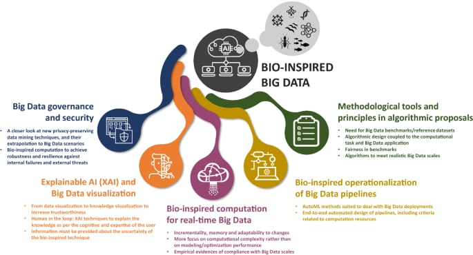
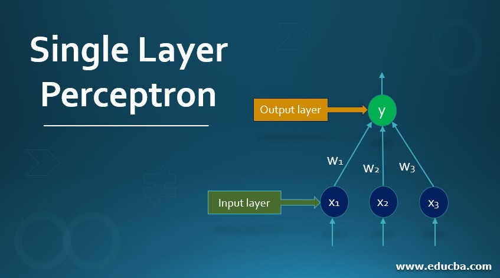
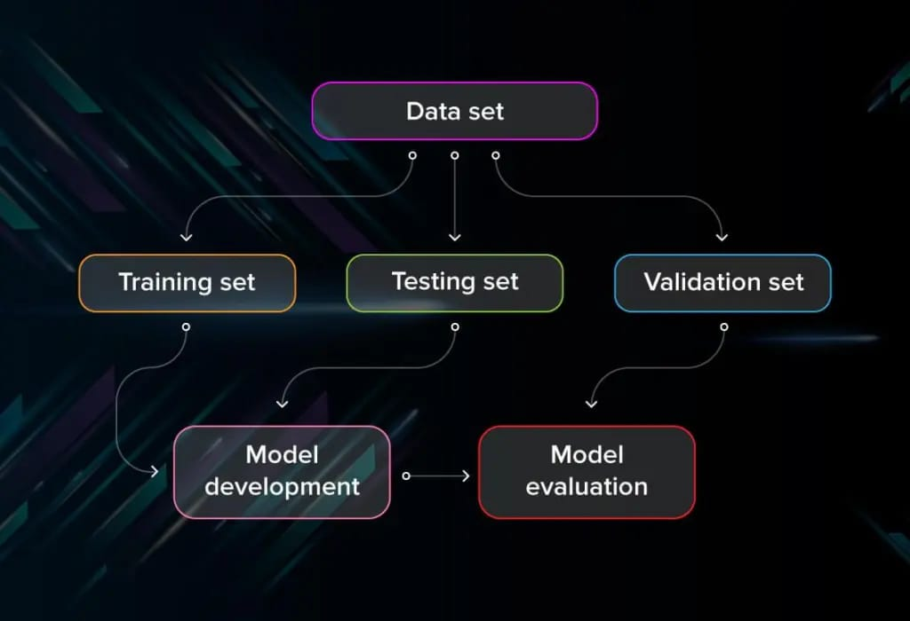
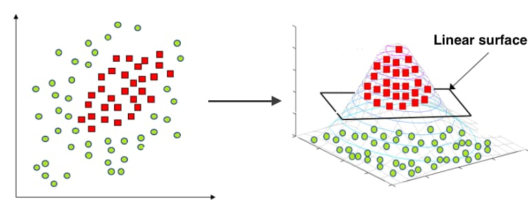

The Perceptron:
1.Bio-inspired Learning:
- Inspired by the functioning of biological neurons, the perceptron is a fundamental concept in neural networks and machine learning.
- Click here for YOUTUBE Class
2.The Perceptron Algorithm:
- A linear binary classification algorithm that learns to assign weights to input features and make predictions based on a threshold function.
- Click here for YOUTUBE Class
3.Geometric Interpretation:
- The perceptron algorithm can be interpreted geometrically in terms of finding a hyperplane that separates classes in the feature space.
4.Interpreting Perceptron Weights:
- Understanding the significance of weights assigned to different features by the perceptron model.
5.Perceptron Convergence and Linear Separability:
- : The conditions under which the perceptron algorithm converges and the importance of linear separability for successful convergence.
- Click here for YOUTUBE Class
6.Improved Generalization:
- : Techniques to improve the generalization ability of perceptron models, such as regularization and feature engineering.
7.Limitations of the Perceptron::
- : The perceptron has limitations, such as its inability to learn non-linear patterns and susceptibility to noise.


Practical Issues:
1.Importance of Good Features
- The crucial role of selecting informative and relevant features for achieving good model performance.
- Click here for YOUTUBE Class
2.Irrelevant and Redundant Features:
- The negative impact of including irrelevant or redundant features on model performance and efficiency.
- Click here for YOUTUBE Class
3.Feature Pruning and Normalization:
- Techniques for removing irrelevant features and normalizing feature values to improve model performance and convergence.
4.Combinatorial Feature Explosion:
- The challenge posed by a large number of features leading to a combinatorial explosion in the model's complexity.
5.Evaluating Model Performance:
- Methods for assessing the performance of machine learning models, including metrics like accuracy, precision, recall, and F1-score. .
- Click here for YOUTUBE Class
6.Cross Validation:
- A technique for assessing the generalization performance of a model by partitioning the data into multiple subsets for training and testing.
- Click here for YOUTUBE Class
7.Hypothesis Testing and Statistical Significance:
- : Assessing the significance of observed results in machine learning experiments through hypothesis testing and statistical analysis.
- Click here for YOUTUBE Class
8.Debugging Learning Algorithms:
- Identifying and resolving issues with machine learning algorithms, such as overfitting, underfitting, and data leakage.
- Click here for YOUTUBE Class
9.Bias-Variance Tradeoff:
- : Balancing the bias and variance of a model to achieve optimal generalization performance, often through techniques like regularization.

Linear Models: :
1.Optimization Framework for Linear Models:
- Formulating linear models within an optimization framework to find the optimal parameters that minimize a defined loss function.
- Click here for YOUTUBE Class
2.Convex Surrogate Loss Functions:
- Using convex surrogate loss functions to approximate non-convex objectives in optimization problems.
- Click here for YOUTUBE Class
3.Weight Regularization:
- Techniques for regularizing the weights of linear models to prevent overfitting and improve generalization.
4.Optimization and Gradient Descent:
- Methods for optimizing linear models using gradient-based optimization algorithms like gradient descent.
5.Support Vector Machines (SVMs):
- A type of linear model that finds the optimal hyperplane to separate classes by maximizing the margin between them, often used for binary classification tasks.
- Click here for YOUTUBE Class


Click below